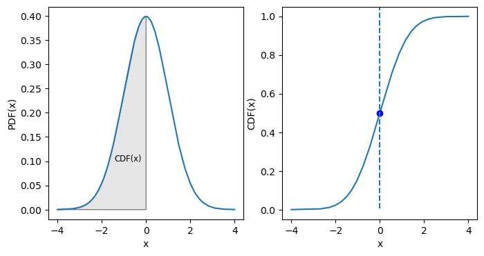
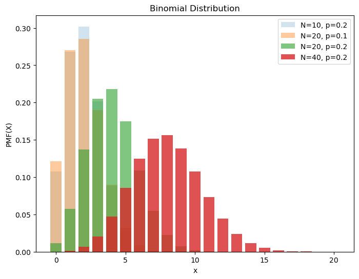
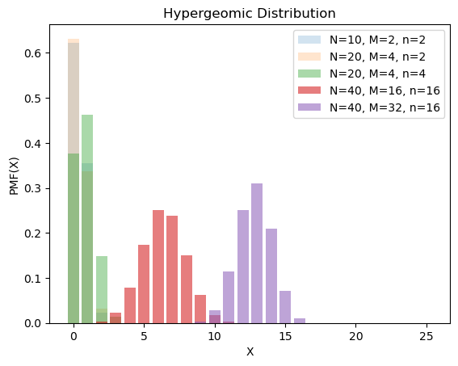
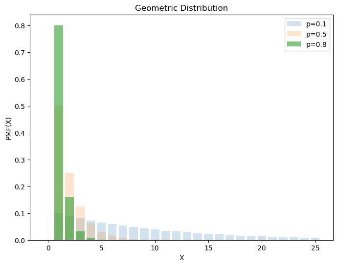
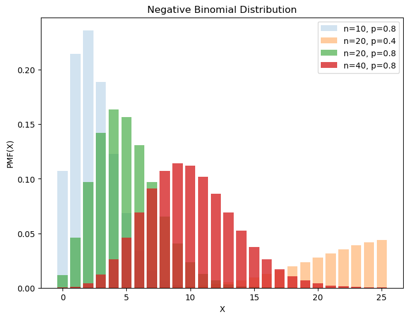
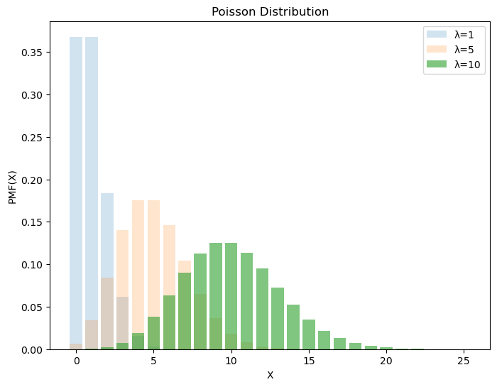
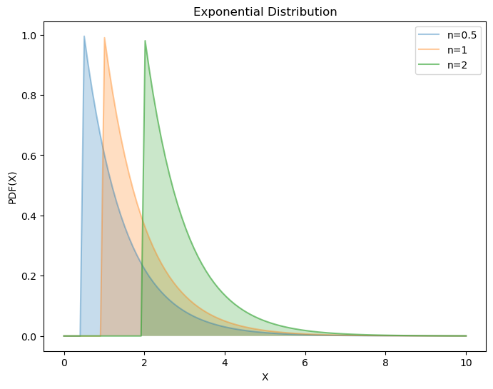
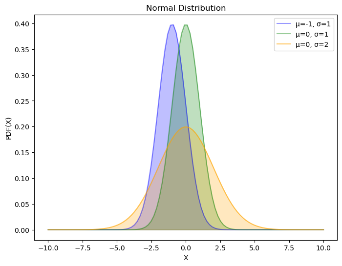
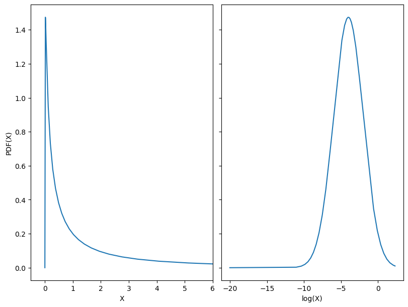
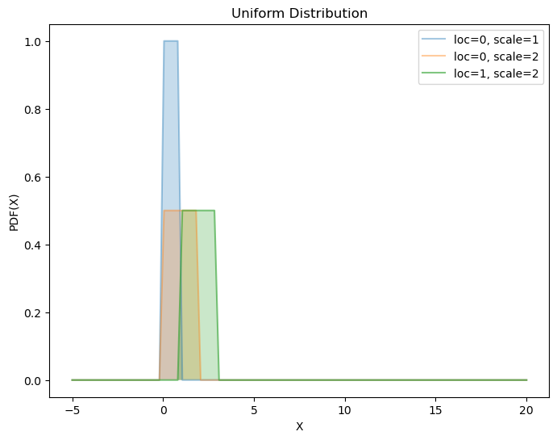

概率与分布#
Show code cell source
import matplotlib.pyplot as plt
import numpy as np
from scipy import stats
plt.style.use("fast")
1. 条件概率#
1.1. 定义#
古典概率
无需实验
没有误差
可能性有限且大小相等
条件概率
指事件\(𝑨\)在事件\(B\)已发生条件下的发生概率
表示为：\(P(A|B)\)，\(P(AB) = P(B|A)P(A)\)
1.2. 事件的运算#
在概率论中，考虑一个样本空间 Ω，它是所有可能结果\(ω\)的集合，以及它的子集的集合\(F\)，其结构为 σ 代数，其元素称为事件（event）。
有限可加性
加法定律
独立性
推论 1
1.3. 全概率公式#
完备事件群：任意两事件互斥，所有事件的并集是整个样本空间（必然事件）
全概率公式：对完备事件组\(B_{i}\)，若事件都有正概率，则对任一事件\(𝑨\)都有如下公式成立
2. 随机分布#
2.1. 随机变量#
随机变量
一个真实的随机变量 X 是一个（可度量的）从\(Ω\)到\(ℝ\)的映射。
离散随机变量
若一个随机变量\(X\)在\(ℝ\)的一个子集中取值，其取值个数可度量，则说它是离散的。
2.2. 分布函数#
概率质量函数（Probability Mass Function，PMF）：离散随机变量在各特定取值上的概率。
概率密度函数（Probability Density Function，PDF）：连续随机变量的 PMF。
累积分布函数（Cumulative Distribution Function，CDF）：PDF 的积分，是分位数的倒数。
\(k\) 个随机值的和 \(S_{k} ⩾ 4\sqrt{k}\)
生存函数（Survival Function，SF）：1 - CDF，给出大于给定值的值的概率。也可解释为数据”存活”超过某个值的比例。
百分点函数（Percentile Point Function，PPF）：CDF 的逆函数。
逆生存函数（Inverse Survival Function，ISF）
Show code cell source
_, axes = plt.subplots(1, 2, figsize=(8, 4))
start, end = -4, 4
loc, scale = 0, 1
func = stats.norm(loc, scale)
x = np.linspace(start, end, 201)
y = func.pdf(x)
ix = np.linspace(start, loc)
iy = func.pdf(ix)
shade = [(start, 0), *zip(ix, iy), (loc, 0)]
polygon = plt.Polygon(shade, facecolor="0.9", edgecolor="0.5")
axes[0].plot(x, y)
axes[0].add_patch(polygon)
axes[0].text(
0.2 * (start + loc),
0.25 * func.pdf(loc),
"CDF(x)",
horizontalalignment="center",
fontsize="small",
)
axes[0].set(xlabel="x", ylabel="PDF(x)")
y_ = func.cdf(x)
axes[1].plot(x, y_)
axes[1].plot(loc, func.cdf(loc), marker="o", color="b")
axes[1].axvline(x=0, ymin=0.05, ymax=1, ls="--")
axes[1].set(xlabel="x", ylabel="CDF(x)")
plt.show()

3. 常见离散分布#
3.1. 二项分布#
设试验 E 只有 2 种可能结果 A 和 Ā，则称 E 为 Bernoulli 试验，将此试验独立重复\(n\)次，即为\(n\)重 Bernoulli 试验（如放回抽样），其结果的发生概率服从 Bernoulli 分布，也叫 0-1 分布。
将后者的试验结果\(X\)扩展为 ℤ，则其中一个结果\(k (k ∈ ℤ)\)的发生概率\(P\{X = k\}\)服从二项分布
其名称源于，其 PMF 形式类似二项式定理
Show code cell source
ns = [10, 20, 20, 40]
ps = [0.2, 0.1, 0.2, 0.2]
alphas = np.arange(1, len(ns) + 1) * 0.2
X = np.arange(0, 20 + 1)
_, ax = plt.subplots(figsize=(8, 6))
for n, p, alpha in zip(ns, ps, alphas):
y = stats.binom(n=n, p=p).pmf(X)
ax.bar(X, y, label=f"N={n}, p={p}", alpha=alpha)
ax.set(xlabel="x", ylabel="PMF(X)", title="Binomial Distribution")
ax.legend()
plt.show()

假如投一个正六面体的筛子 256 次，则得到 32 次 6 的概率，可由如下方式计算
def binomial_test(n, p, checkVal):
p_oneTail = stats.binomtest(checkVal, n, p, alternative='greater')
p_twoTail = stats.binomtest(checkVal, n, p)
return (p_oneTail.pvalue, p_twoTail.pvalue)
n, p = 256, 1 / 6
checkVal = 64
p1, p2 = binomial_test(n, p, checkVal)
print(
f'The chance that you roll {checkVal} or more "6" is {p1:5.3f}, and the chance of an event as extreme as {checkVal} or more rolls is {p2:5.3f}'
)
The chance that you roll 64 or more "6" is 0.000, and the chance of an event as extreme as 64 or more rolls is 0.001
3.2. 超几何分布#
一批产品共\(N\)个，其中废品\(M(⩽ N)\)个。随机抽取\(n\)个，含\(m\)个废品的概率服从超几何分布，相当于不放回抽样的二项分布
Show code cell source
Ns = [10, 20, 20, 40, 40]
Ms = [2, 4, 4, 16, 32]
ns = [2, 2, 4, 16, 16]
alphas = [0.2, 0.2, 0.4, 0.6, 0.6]
_, ax = plt.subplots()
X = np.arange(0, 26, 1)
for N, M, n, alpha in zip(Ns, Ms, ns, alphas):
y = stats.hypergeom(N, M, n).pmf(X)
ax.bar(X, y, label=f"N={N}, M={M}, n={n}", alpha=alpha)
ax.set(xlabel="X", ylabel="PMF(X)", title="Hypergeomic Distribution")
ax.legend()
plt.show()

3.3. 几何分布#
在\(n\)次 Bernoulli 试验中，第\(k+1\)次才第一次成功的机率服从几何分布，记作\(X ∼ G(p)\)，也可以理解成连续失败\(k\)次的概率分布。
几何分布得名于几何级数：
Show code cell source
ps = [0.1, 0.5, 0.8]
alphas = [0.2, 0.2, 0.6]
X = np.arange(0, 26, 1)
_, ax = plt.subplots(figsize=(8, 6))
for p, alpha in zip(ps, alphas):
y = stats.geom(p=p).pmf(X)
ax.bar(X, y, label=f"p={p}", alpha=alpha)
ax.set(xlabel="X", ylabel="PMF(X)", title="Geometric Distribution")
ax.legend()
plt.show()

3.4. 负二项分布#
已知合格率为\(p\)时，进行\(n\)次实验，抽到合格品\(r\)个，服从分布负二项分布，即重复\(n\)次的几何分布
此分布得名于负二项展开式
ns = [10, 20, 20, 40]
ps = [0.8, 0.4, 0.8, 0.8]
alphas = np.arange(1, len(ns) + 1) * 0.2
X = np.arange(0, 26, 1)
_, ax = plt.subplots(figsize=(8, 6))
for n, p, alpha in zip(ns, ps, alphas):
y = stats.nbinom(n=n, p=p).pmf(X)
ax.bar(X, y, label=f"n={n}, p={p}", alpha=alpha)
ax.set(xlabel="X", ylabel="PMF(X)", title="Negative Binomial Distribution")
ax.legend()
plt.show()

当\(r\)为整数时，又称 Pascal 分布。
3.5. Poisson 分布#
Poisson 分布用于描述单位时间内随机事件发生的次数。将时间切分为\(n\)个时段，设某事件的总发生次数为\(λ\)，则一个时段内该事件发生的概率为\(p= λ/n\)，代入二项分布，
当\(n → ∞\)
得
Poisson 分布的均值、方差具有线性可加性。
λs = [1, 5, 10]
alphas = [0.2, 0.2, 0.6]
X = np.arange(0, 26, 1)
_, ax = plt.subplots(figsize=(8, 6))
for λ, alpha in zip(λs, alphas):
y = stats.poisson(mu=λ).pmf(X)
ax.bar(X, y, label=f"λ={λ}", alpha=alpha)
ax.set(xlabel="X", ylabel="PMF(X)", title="Poisson Distribution")
ax.legend()
plt.show()

3.6. 小结#
离散分布 |
表示 |
结果取值 |
常见情况 |
|---|---|---|---|
Bernoulli 分布 |
\(Bern(p)\) |
\(\{0, 1\}\) |
单样本互斥事件 |
二项分布 |
\(B(n, p)\) |
ℤ |
多样本互斥事件 |
超几何分布 |
\(H(N, m, n)\) |
ℤ |
不放回二项分布 |
Poisson 分布 |
\(Pois(λ)\) |
ℤ |
小概率事件 |
当\(n ⩾ 20, p ⩽ 0.05\)，\(B(n, p) → Pois(λ)\)
当\(np ⩾ 5\)，\(B(n, p) → N(np, np(1 - p))\)
当\(λ ⩾ 20\)，\(Pois(λ) → N(λ, λ)\)
当\(N → ∞\)，\(H(N, m, n) → B(n, p)\)（当\(n\)固定，则\(p=M/N\)固定）
4. 常见连续分布#
4.1. 指数分布#
指数分布表示 Poisson 过程中的事件的时间间隔。可以看作是逆 Poisson 分布。
逆分布（inverse distribution）是随机变量的倒数服从的分布。
概率密度函数
其中，\(λ > 0\)，是分布的参数，即每单位时间发生该事件的次数。
Show code cell source
locs = [0.5, 1, 2]
alphas = [0.4, 0.4, 0.6]
X = np.linspace(0, 10, 100)
_, ax = plt.subplots(figsize=(8, 6))
for loc, alpha in zip(locs, alphas):
y = stats.expon.pdf(X, loc=loc)
ax.plot(X, y, label=f"n={loc}", alpha=alpha)
ax.fill_between(X, y, alpha=0.25)
ax.set(xlabel="X", ylabel="PDF(X)", title="Exponential Distribution")
ax.legend()
plt.show()

无记忆性
4.2. Gaussian 分布#
Gaussian 分布或 Gaussian 分布是所有分布函数中最重要的。这是由于所有分布函数的均值在足够大的样本数下都近似于 Gaussian 分布。
概率密度函数
该式由 de Moivre-LaPlace 中心极限定理首先给出，详见第二章。
Show code cell source
locs = [-1, 0, 0]
scales = [1, 1, 2]
colors = ["blue", "green", "orange"]
alphas = [0.4, 0.4, 0.6]
X = np.linspace(-10, 10, 100)
_, ax = plt.subplots(figsize=(8, 6))
for loc, scale, color, alpha in zip(locs, scales, colors, alphas):
y = stats.norm(loc=loc, scale=scale).pdf(X)
ax.plot(X, y, label=f"μ={loc}, σ={scale}", color=color, alpha=alpha)
ax.fill_between(X, y, color=color, alpha=0.25)
ax.set(xlabel="X", ylabel="PDF(X)", title="Normal Distribution")
ax.legend()
plt.show()

4.3. 对数 Gaussian 分布#
数据的对数正态变换通常用于将高偏度分布变换为 Gaussian 分布。
其中，\(s\)为形状参数。
Show code cell source
x = np.logspace(-9, 1, 1001) + 1e-9
func = stats.lognorm(2)
y = func.pdf(x)
_, axes = plt.subplots(1, 2, figsize=(8, 6), sharey=True, constrained_layout=True)
axes[0].plot(x, y)
axes[0].set(xlim=(-0.5, 6), xlabel="X", ylabel="PDF(X)")
axes[1].plot(np.log(x), y)
axes[1].set(xlabel="log(X)")
plt.show()

4.4. 均匀分布#
概率密度函数
Show code cell source
locs = [0, 0, 1]
scales = [1, 2, 2]
alphas = [0.4, 0.4, 0.6]
X = np.linspace(-5, 20, 100)
_, ax = plt.subplots(figsize=(8, 6))
for loc, scale, alpha in zip(locs, scales, alphas):
y = stats.uniform(loc=loc, scale=scale).pdf(X)
ax.plot(X, y, label=f"loc={loc}, scale={scale}", alpha=alpha)
ax.fill_between(X, y, alpha=0.25)
ax.set(xlabel="X", ylabel="PDF(X)", title="Uniform Distribution")
ax.legend()
plt.show()
